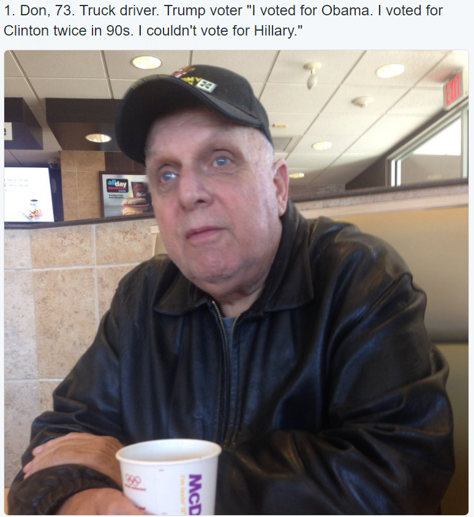

Trump 为什么会取胜加州和纽约那些因为 Trump 上台而去抗议游行的人，都应该想一想这个问题：既然 Trump 被媒体搞得那么臭，希拉里一副好人形象，为什么 Trump 还会胜出？难道选票数有假吗？难道大部分美国人都是傻子，流氓或者变态吗？当然不是的！人民的眼睛是雪亮的，就像之前文章提到的那位卡车司机。大部分的美国人像他一样，是淳朴善良勤劳有教养的。  人民被各种政客骗了又骗，生活每况愈下，所以他们已经不再相信任何政客了，更不要说一个有那么多绯闻的政客。这时候来了一个 Trump，大声道出了人民需要解决的切身问题，痛骂那些伤害他们的人，所以他们很容易就选择了他。 如果你还不理解，那我们来做一个简单的类比和推理：你现在要在两个人里选择一个，跟你一起开车去很远的地方旅行。这两个人你都不了解，甚至都没见过面，但是其中一个在你的朋友圈子里名声很差，大家都说他是傻逼流氓，而另一个人大家都说他是好人。那你会选择谁呢？当然是大家都说好的那一个对不对？然而这次美国大选的结局却不是这样，这是为什么呢？ 如果希拉里真是一个好人，关心人民疾苦，而 Trump 被媒体报道得那么差，而且没有任何政治经验，如果所有人都完全不了解这两个人，只是靠媒体的报道来投票，那投票给希拉里的肯定是压倒性的，对吧？Trump 只应该得到不到 5% 的票，对吧？然而这次很奇怪，说明虽然媒体一边倒，Trump 却胜利了。这说明人民不只是靠媒体的好恶来决定选谁的，他们靠的是自己的亲身接触和理解，他们直接看这个人说了什么，做了什么，他是否能解决自己切身的问题。他们甚至会从他的眼神和语气，感觉到这个人是否真诚。他们会做各种背景调查和分析。媒体真是把 Trump 说成了一个大粪坑，可他还是赢了，这说明希拉里的实际表现真的非常非常非常差，超越了所有媒体对 Trump 的负面报道加在一起。大部分的美国人民是不喜欢希拉里的，他们已经完全不相信她，不管媒体如何报道。为什么媒体会完全倒向希拉里一边呢？这只能说明媒体是被希拉里控制的。就是这么简单。 如果你还不理解 Trump 怎么会获胜，那你可能应该问问自己，自己是不是身处某种特殊的地方，这地方相对富裕，或者周围的人心理都不大像普通老百姓，或者脑子都有点问题，以为自己是有钱人暴发户，可以骑在别人头上，或者认为自己是技术天才，可以造出机器来代替很多人的工作，所以你只需要关心全球变暖，绿色食品，垃圾回收，大麻合法化，同性恋婚姻，变性人该上哪个厕所之类的无病生吟？或者这些人就是不痛不痒，根本不关心，所以只临时看看媒体报道，连别人演讲都没看，就投出选票。对的，硅谷和纽约，就是这样的地方 :) 有几个我身边的人，在美国生活几十年了，本来早就有投票权，可是以前从来没投过票，觉得不关自己的事。这次听到希拉里在呼唤：“女同胞们，你们有力量阻止 Trump！他是一个种族主义者，性别歧视者，偏执狂！我们不能让他做总统，否则灾难就在眼前！” 所以不问青红皂白，也没看人家 Trump 到底说了什么，也没看希拉里的绯闻，更不可能知道维基解密这样的东西。平生第一次注册投票，就这样稀里糊涂投给了希拉里。 还有另外一些人，完全不明白什么是民主，什么才是健康的社会制度。今天我吃完午饭去外面散步，后面有两个西装革履领导模样的陌生人，郑重其事的在聊选举的事。还隔着几步路呢，嗓门大得让我以为在我耳边说话，说给我听似的，不得不忍受了好长一段路。其中一个人滔滔不绝地说：“…… 选举总统的时候，公司应该被作为一个人对待，它们也应该有投票权。大小公司都没有投票权，是我们选举制度很大的一个缺陷，所以才会出现这次的不幸结局。我们准备提议……” 提议公司要有总统投票权！那公司也给每个雇员投票权，我们一起来选举 CEO 好不好？公司要是有了选举总统的权利，那人民还怎么活，这不是要完全进入奴隶社会吗！我当时嘴都张大了。加州居然有人会有这么愚蠢的想法，他们举行抗议示威，放火打砸，也就不足为怪了。美国要是出现纳粹党，那一定首先产生在加州。这些人就像卓别林在『大独裁者』最后的演讲里说的那样：想得太多，感觉太少，机器一样的人，机器一样的心…… 然而大部分其他地方的美国人并不像我们这么幸运，他们是真的出现了生存问题，这是我们身边的人很多没有想象到的。为什么他们会出现生存问题？因为美国的社会制度，整个系统都是有毛病的。社会福利非常差，医疗系统完全就是妖怪，看个感冒都要往死里宰！房价，油价和生活开销疯涨，利率又下调到几乎没有。失业率达到了可怕的程度，超过 20%，也就是五个人里面就有一个没工作的，政府却谎报说只有 5.6%。跟中国大跃进年代的情况类似，号称亩产十万斤，结果其实饿殍遍地。再加上我们这些硅谷技术呆子们造出来的自动化工具，各种 Amazon 之类的电商，各种手机 app 服务，Uber 之类，抢走了很多人的饭碗。实体书店商店濒临倒闭，出租车没生意…… 各大技术公司在内部提供免费三餐，把旁边餐馆都搞垮了，附近地区成为死气沉沉，鸟不下蛋的地方。然后还不回报社会，各种避税，钻法律空子压低工资，把工作转移到海外，在本国大量裁员，为的是赚更多的暴利。公司和亿万富翁总能想法避税，几乎不交税，中产阶级挣点血汗钱，倒交税超过 30%。政府拿着上万亿的血汗税钱去打仗（希拉里对伊拉克战争投了赞成票），血本无回，造成成千上万的伤残士兵，然后叫穷说没钱发福利和养老金。你说为什么美国老有人发疯，买自动步枪来在大街上扫射然后自杀？活不下去了嘛，找一群人一起死了有个伴！ 最近还整出 ObamaCare 这样的害人东西，花费 50 亿美元(!)做了个 bug 无数的网站。我认识一个做过那网站的程序员，他说被请去之后几个月在那里闲着，根本就没叫他做事，倒是拿着不菲的工资，住着高档酒店，每天 70 刀饭钱，外加每月 1000 多刀拿去租跑车。他也怪可怜的，就这一份工作轻松点，可是实在太轻松了！用这网站的人呢，本来不怎么生病的，被迫花不少钱买了医保，结果 deductible 太高，等于没买…… 我在 Sourcegraph 的时候买的就是 ObamaCare。真的，网站 bug 无数！有些按钮点了莫名其妙根本没反应，好不容易填好的内容，提交失败无数次，到后来点了按钮就求上帝保佑不要再出错，每次失败还得重填，让你急的想把电脑砸了！！！！！这就是 50 亿美元做出来的网站。那个医疗保险我从来没用过，每个月却花费超过 400 刀。有次走在路上被一条贱狗抓了一爪，我担心有狂犬病，只好找了个破烂的“urgent care”地方，自己花钱让护士给打了个破伤风针就走人。正式的医院和诊所根本不敢去，去了非得黑宰你几百刀不可，而这保险必须要你花费几千刀之后才生效！就像 Trump 说的，你必须被拖拉机给撞了，才能用 ObamaCare！ 遇到了如此严重的问题，你说人民会怎样？就像你生了疑难病症，要动很大的手术。你选择医生时，会只看网站上的好评数吗？你不仅要看别人的评语，肯定还得亲自去跟他谈，你还得看他的眼神和语气，感觉一下他会不会骗你，看看他对自己的技术有没有信心。你还得看他以前的成功案例，甚至打电话去问那些人现在感觉如何…… 这样货比三家之后，还要想它一两个月，然后才能决定。出现了生存问题的人就是这样，他们会非常小心的研究之后，亲眼看看那个人的临场表现，进行各种背景调查，然后才做出选择。媒体说这人怎么样，他们只是作为参考而已。 Trump 早在 35 年前就看见了美国的这些问题，真是看不下去了，想解决它，这是真真切切用摄像机记录下来的（视频）。他要想当总统，犯不着在 35 年前就开始给你演戏吧？从 1980 年开始，每次有人问他想不想当美国总统，他总是说：“我不想。但我相信有其他人可以做这工作，美国有很多有才能的人……” 有一次提问者笑道：“你是嫌做总统工资不够高吧？:)” Trump 早就知道美国有严重的问题，然而却一直在等其他人去解决它，等了 35 年！可惜直到 2015 年，他等的那个人始终没有出现，倒是出现一连串的战争贩子…… 他已经不再相信会有其他人会真的去解决美国的问题，所以才决定出山，参加竞选。这跟那些从哈佛耶鲁之类的“青年政治学院”毕业的职业政客，是完全不同的态度。这些人一毕业就在政界混迹，拉帮结派，处心积虑，不择手段争夺高位，为的就是谋取不可告人的利益。政客的演讲都是一种表演，跟差劲的演员没什么区别。然而从 Trump 的各种演讲，你看得出来那是真心的。当他说“Make America great again！” 就像马丁路德金在说“I have a dream！” 还有许多受到过他帮助的人，他们的亲身故事，有着非常强大的说服力。这就是为什么虽然 Trump 有时候嘴那么“臭”，大部分的美国人民还是选择了他。忠言逆耳，就是这个道理。 Trump 的胜利，显示出了民主的力量。美国的历届大选闹剧，让我都不怎么相信民主了。可是它在危机的关头，还真的起了作用…… |